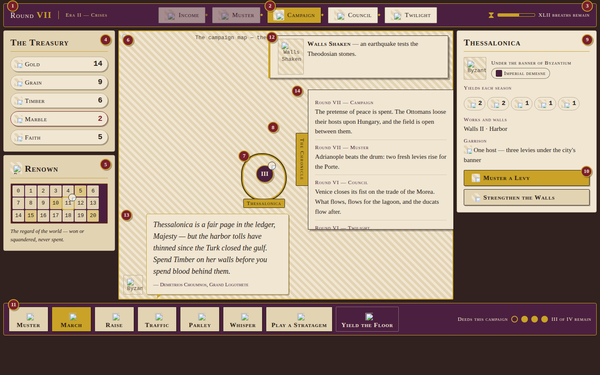
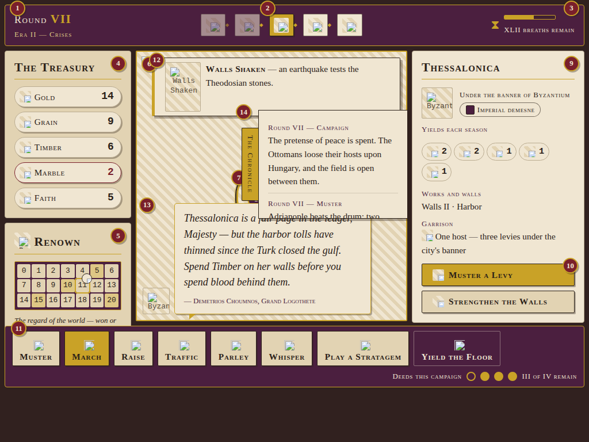

The Board on the Lesser Page
A codicil to game.html — how the campaign board yields, gracefully and without loss, when the page narrows to a tablet's breadth.
The campaign board is drawn broad, as befits an empire. At 1440 × 900 it is the full
spread: rails wide, phases named, orders written out. Narrowed toward 1024 the shell does
not break — it condenses, shedding letters before it sheds meaning, and folding before it hides.
This codicil fixes what condenses, what folds, and the three things that never leave the page.
Mind the seals. The plates below are true captures, and carry game.html's own crimson apparatus baked in. This codicil's seals are • lapis, one to twelve, reckoned beneath. Neither set ships.
Two Pages, One Board

1 2 3 4 5 6 7 8 9 10 111440 × 900, the shell served broad.
Lapis seals one to eleven mark the zones reckoned below.
1 2 3 4 5 6 7 8 9 10 111024 × 768, the same shell tightened.
The same seals, the same zones, the lesser page.The Reckoning
Each seal, and what the lesser page asks of its zone.
- 1 Round counter & era banner — the reign stacks: round above, era beneath; the gilded divider yields. Read-only chrome at every breadth.
- 2 Phase track — never hidden. At the condensed
tier the five phases go glyph-only: each
.phase-nameis visually hidden yet still announced in full to assistive tech. Tap a phase and its one-line tooltip rises on a plate ("Campaign — hosts march and sieges are set."); the next tap lays it down. - 3 Breath-timer — never hidden. The caption stacks beneath the sand-gauge; Roman numerals as ever, crimson under ten breaths, and at nought the turn yields itself. No clock digits at any breadth.
- 4 The Treasury — never hidden. The left rail
narrows from
268pxto220px; every chip keeps all three of icon, word and count (README §3). Tap a chip for its income breakdown by province — what hover once gave, the finger now takes. The crimson.is-shortrim reads the same on every page. - 5 Renown — tightens in place, never folds:
notches close from
1.55remto1.3rem, yet each remains a touch target grown to the thumb's law (seal 11). Tap a held notch to read the holder; tap a gilded milestone to read its reward. - 6 The map, under the finger — one-finger drag
pans; pinch zooms about the pinch; a double-tap steps in, a two-finger tap steps out. A tap selects a
province; a tap on open water clears. Press-and-hold raises whatever hover would have — the province
name-plate, a host's composition — for nothing on this board lives on hover alone (README §1). No
gesture ever gives an order: hosts march only at "Set the Seal", with
quill_scratch. The chronicle opens by its drawn tab, never an edge-swipe — the map's edges belong to the map. - 7 Chronicle drawer — a drawer at every
breadth. Condensed, it narrows from
21remto16remand rises clear of the advisor's seat; an overlay always — the shell never reflows for it. Tap or drag the gilded tab;page_turnon open. - 8 Province card — the right rail holds at
300px, down from336px; the yield chips wrap to a second line, all five stores shown even at nought — Gold, Grain, Timber, Marble, Faith, always the full ledger. The two contextual orders keep their written names: the largest seals on the page, and they stay so. - 9 Action bar — under a coarse pointer at the
condensed tier, the eight orders shed their letters and stand as glyphs alone. Press one and its name
rises on a gilded plate above the thumb; lift there to arm it, slide away to stay the hand.
Yield the Floor alone keeps its letters at every breadth — and confirms, always. The deed
pips take their own line rather than clip. (The capture shows the fine-pointer form, names standing;
the glyph-only bar is cut by
@media (pointer: coarse), not by width alone.) - 10 Advisor — the one panel that folds: dismissed counsel folds to the counsellor's crest disc in its bottom-left seat; tap the crest and the counsellor speaks again. New counsel arrives unfolded, says its piece, folds at a tap. The tutorial speaks through this same seat and obeys the same law.
- 11 The thumb's law — every pressable thing
presents at least
48 × 48 pxto the finger: orders, chips, notches, tabs, host tokens, drawer handles. Where the drawn form is smaller, an invisible margin grows the target — the art stays delicate, the touch does not. Grown margins never overlap; where they would, they part. A seal too small for a thumb is no seal at all. - 12 The upright page — portrait is not served; the tablet is shown one plate and nothing else, mocked below.
What never leaves the page: whatever else tightens or folds, three things stay in sight at every supported breadth — the Treasury (all five stores), the phase track, and the breath-timer. A sovereign may misplace a province; they may not lose sight of the sand.
The Upright Page
The board is an open spread, not a scroll, and will not be folded into one. A tablet held upright
— whatever its breadth — is shown this one plate on porphyry and nothing of the board beneath. The
same plate serves a landscape page narrower than 1024px: below that, the three constants
cannot be kept honest, so the board declines to pretend.
Turn the tablet as you would turn a page.
The plate clears the instant the page turns; the shell resumes where it stood, nothing lost. The sand, mind, keeps falling — the council does not wait on any sovereign's grip.The Breakpoint Contract
Three tiers, cut by width; touch manners, cut by pointer.
| The page | The shell served |
|---|---|
1280px and broader |
The full spread. Rails at 268px and 336px;
phases named; orders written out. Reference plate 1440 × 900, no page
scroll. |
1024px to 1279px |
The condensed spread. Rails tighten to 220px and
300px; the reign stacks; phases go glyph-only; the chronicle narrows. Coarse
pointers get glyph-only orders (names on press) and the folding advisor. The stores, the
phases and the sand remain, whole. |
Narrower than 1024px, or any upright page |
Not served. One plate on porphyry: "Turn the tablet as you would turn a page." It clears the moment the page suffices; the board never renders beneath it. |
Lapis seals, this legend, and the mocked plate are spec apparatus — they do not ship. This page may scroll; the shell it describes never does.